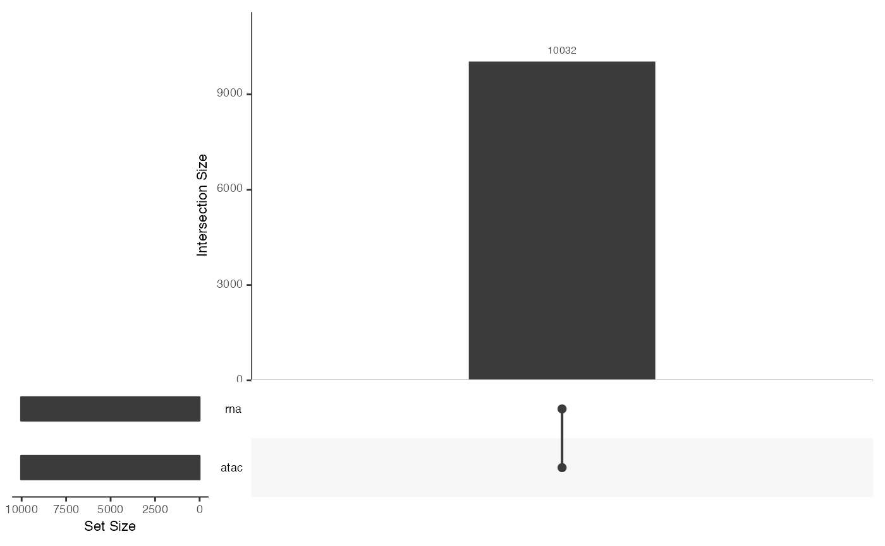
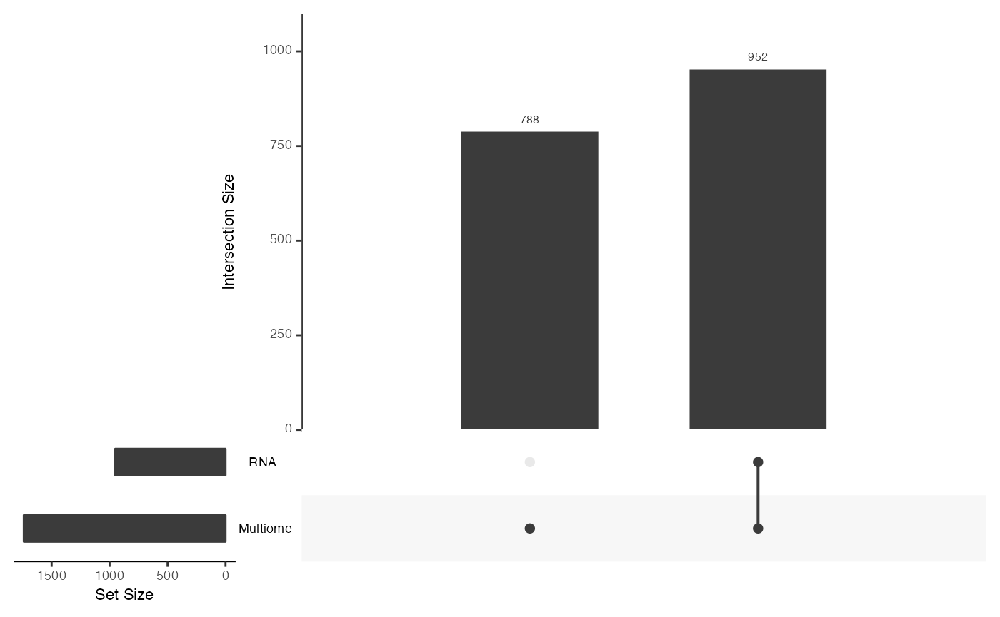
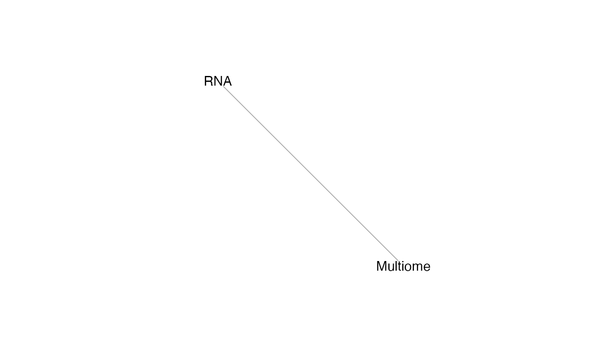
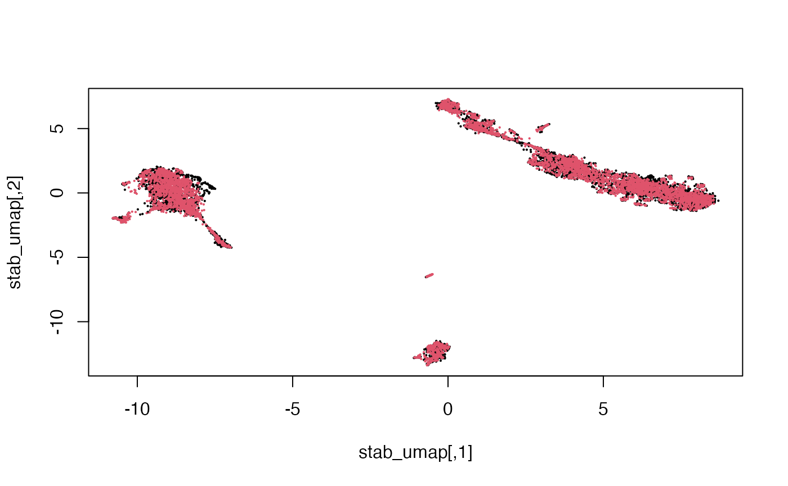
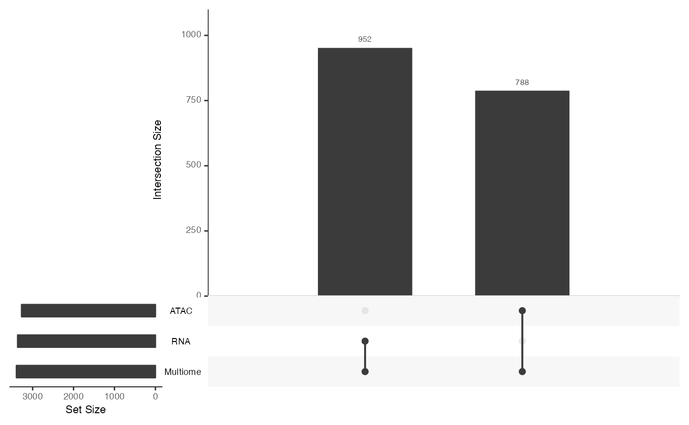
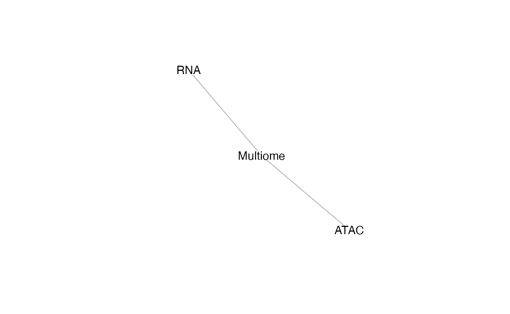
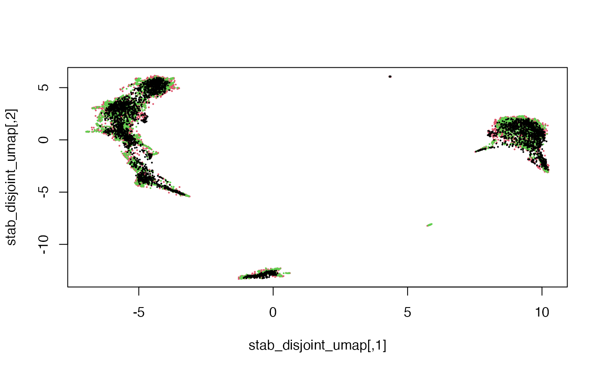

StabMap: Stabilised mosaic single cell data integration using unshared features
Shila Ghazanfar
Source:vignettes/stabMap_PBMC_Multiome.Rmd
stabMap_PBMC_Multiome.Rmd
set.seed(2021)Introduction
StabMap is a technique for performing mosaic single cell data integration.
In this vignette we will elaborate on how these steps are implemented
in the StabMap package.
Load data
mae <- scMultiome("pbmc_10x", mode = "*", dry.run = FALSE, format = "MTX")Perform some exploration of this data.
mae## A MultiAssayExperiment object of 2 listed
## experiments with user-defined names and respective classes.
## Containing an ExperimentList class object of length 2:
## [1] atac: SingleCellExperiment with 108344 rows and 10032 columns
## [2] rna: SingleCellExperiment with 36549 rows and 10032 columns
## Functionality:
## experiments() - obtain the ExperimentList instance
## colData() - the primary/phenotype DataFrame
## sampleMap() - the sample coordination DataFrame
## `$`, `[`, `[[` - extract colData columns, subset, or experiment
## *Format() - convert into a long or wide DataFrame
## assays() - convert ExperimentList to a SimpleList of matrices
## exportClass() - save data to flat files
upsetSamples(mae)
## DataFrame with 6 rows and 6 columns
## nCount_RNA nFeature_RNA nCount_ATAC nFeature_ATAC
## <integer> <integer> <integer> <integer>
## AAACAGCCAAGGAATC 8380 3308 55582 13878
## AAACAGCCAATCCCTT 3771 1896 20495 7253
## AAACAGCCAATGCGCT 6876 2904 16674 6528
## AAACAGCCAGTAGGTG 7614 3061 39454 11633
## AAACAGCCAGTTTACG 3633 1691 20523 7245
## AAACAGCCATCCAGGT 7782 3028 22412 8602
## celltype broad_celltype
## <character> <character>
## AAACAGCCAAGGAATC naive CD4 T cells Lymphoid
## AAACAGCCAATCCCTT memory CD4 T cells Lymphoid
## AAACAGCCAATGCGCT naive CD4 T cells Lymphoid
## AAACAGCCAGTAGGTG naive CD4 T cells Lymphoid
## AAACAGCCAGTTTACG memory CD4 T cells Lymphoid
## AAACAGCCATCCAGGT non-classical monocy.. Myeloid
dim(experiments(mae)[["rna"]])## [1] 36549 10032
names(experiments(mae))## [1] "atac" "rna"Normalise and select features for the RNA modality.
sce.rna <- experiments(mae)[["rna"]]
# Normalisation
sce.rna <- logNormCounts(sce.rna)
# Feature selection
decomp <- modelGeneVar(sce.rna)
hvgs <- rownames(decomp)[decomp$mean>0.01 & decomp$p.value <= 0.05]
length(hvgs)## [1] 952
sce.rna <- sce.rna[hvgs,]Normalise and select features for the ATAC modality.
dim(experiments(mae)[["atac"]])## [1] 108344 10032
sce.atac <- experiments(mae)[["atac"]]
# Normalise
sce.atac <- logNormCounts(sce.atac)
# Feature selection using highly variable peaks
# And adding matching peaks to genes
decomp <- modelGeneVar(sce.atac)
hvgs <- rownames(decomp)[decomp$mean>0.25
& decomp$p.value <= 0.05]
length(hvgs)## [1] 788
sce.atac <- sce.atac[hvgs,]Create a composite full data matrix by concatenating.
## [1] 1740 10032## assayType
## atac rna
## 788 952Mosaic data integration with StabMap
We will simulate a situation where half of the cells correspond to the Multiome modality, and half of the cells correspond to the RNA modality. Our goal is to then generate a joint embedding of the cells using all data, and to impute the missing ATAC values from the RNA modality cells.
dataType = setNames(sample(c("RNA", "Multiome"), ncol(logcounts_all),
prob = c(0.5,0.5), replace = TRUE),
colnames(logcounts_all))
table(dataType)## dataType
## Multiome RNA
## 4983 5049
assay_list = list(
RNA = logcounts_all[assayType %in% c("rna"), dataType %in% c("RNA")],
Multiome = logcounts_all[assayType %in% c("rna", "atac"), dataType %in% c("Multiome")]
)
lapply(assay_list, dim)## $RNA
## [1] 952 5049
##
## $Multiome
## [1] 1740 4983
lapply(assay_list, class)## $RNA
## [1] "dgCMatrix"
## attr(,"package")
## [1] "Matrix"
##
## $Multiome
## [1] "dgCMatrix"
## attr(,"package")
## [1] "Matrix"Examine the shared features between the two datasets using
mosaicDataUpSet().
mosaicDataUpSet(assay_list, plot = FALSE)## Loading required package: UpSetR
From this we note that there are shared features between the RNA and Multiome datasets, but there are many features that are observed only in the Multiome dataset and not the RNA - as we had constructed.
We can understand the mosaicDataTopology() of these
datasets, which generates an igraph object, which can be
inspected and plotted.
mdt = mosaicDataTopology(assay_list)
mdt## IGRAPH 073624a UN-- 2 1 --
## + attr: name (v/c), frame.color (v/c), color (v/c), label.color (v/c),
## | label.family (v/c)
## + edge from 073624a (vertex names):
## [1] RNA--Multiome
plot(mdt)
From this we note that the datasets RNA and Multiome share at least some features. StabMap requires that the mosaic data topology network be connected, that is, that there should be a path between every pair of nodes in the network.
We generate a common joint embedding for these data using StabMap.
Since the Multiome data contains all features, we treat this as the
reference dataset. Since we already examined the mosaic data topology,
we set plot = FALSE.
## Loading required package: scater## Loading required package: ggplot2## treating "Multiome" as reference## generating embedding for path with reference "Multiome": "Multiome"## generating embedding for path with reference "Multiome": "RNA" -> "Multiome"
dim(stab)## [1] 10032 50
stab[1:5,1:5]## Multiome_PC1 Multiome_PC2 Multiome_PC3 Multiome_PC4
## AAACAGCCAAGGAATC 7.914327 -1.3703933 2.8728293 0.2016397
## AAACAGCCAGTAGGTG 9.607305 -2.7416853 2.4949054 -0.1657897
## AAACATGCACCGGCTA 3.551898 -1.3632683 -9.1696271 0.3137612
## AAACATGCAGGGAGCT 4.298441 -1.1046894 -11.2718261 1.2654560
## AAACCGAAGCTGGACC -9.870562 -0.6587611 0.3410302 0.3198895
## Multiome_PC5
## AAACAGCCAAGGAATC 0.9913363
## AAACAGCCAGTAGGTG 1.5115966
## AAACATGCACCGGCTA 1.6221187
## AAACATGCAGGGAGCT 3.1555720
## AAACCGAAGCTGGACC 4.0684566We can reduce the dimension further using non-linear approaches such as UMAP.
## [1] 10032 2
Here we see that the RNA and Multiome cells are fairly well-mixed.
Data imputation after StabMap
Given the joint embedding, we can predict the missing ATAC values
using imputeEmbedding(). We provide the data list, the
joint embedding as output from stabMap(). We set the
Multiome cells as reference and the RNA cells as query. This is useful
for downstream visualisation or further interpretation.
imp = imputeEmbedding(
assay_list,
stab,
reference = colnames(assay_list[["Multiome"]]),
query = colnames(assay_list[["RNA"]]))## Loading required package: BiocNeighbors## Loading required package: slam## Loading required package: Matrix##
## Attaching package: 'Matrix'## The following object is masked from 'package:S4Vectors':
##
## expand
class(imp)## [1] "list"
names(imp)## [1] "Multiome"
lapply(imp, dim)## $Multiome
## [1] 1740 5049
imp[["Multiome"]][1:5,1:5]## 5 x 5 sparse Matrix of class "dgCMatrix"
## AAACAGCCAATCCCTT AAACAGCCAATGCGCT AAACAGCCAGTTTACG AAACAGCCATCCAGGT
## CA6 . . . .
## CNR2 . . . .
## IFNLR1 . . . .
## RCAN3 1.387121 1.787342 1.520869 .
## ZNF683 . . . .
## AAACATGCAAGGTCCT
## CA6 1.177289
## CNR2 .
## IFNLR1 .
## RCAN3 1.101005
## ZNF683 .Indirect mosaic data integration with StabMap
StabMap is a flexible framework for mosaic data integration, and can still integrate data even when there are pairs of datasets that share no features at all. So long as there is a path connecting the datasets along the mosaic data topology (and the underlying assumption that the shared features along these paths contain information), then we can extract meaningful joint embeddings. To demonstrate this, we will simulate three data sources.
dataTypeIndirect = setNames(sample(c("RNA", "Multiome", "ATAC"), ncol(logcounts_all),
prob = c(0.3,0.3, 0.3), replace = TRUE),
colnames(logcounts_all))
table(dataTypeIndirect)## dataTypeIndirect
## ATAC Multiome RNA
## 3338 3359 3335
assay_list_indirect = list(
RNA = logcounts_all[assayType %in% c("rna"), dataTypeIndirect %in% c("RNA")],
Multiome = logcounts_all[assayType %in% c("rna", "atac"), dataTypeIndirect %in% c("Multiome")],
ATAC = logcounts_all[assayType %in% c("atac"), dataTypeIndirect %in% c("ATAC")]
)
lapply(assay_list_indirect, dim)## $RNA
## [1] 952 3335
##
## $Multiome
## [1] 1740 3359
##
## $ATAC
## [1] 788 3338
lapply(assay_list_indirect, class)## $RNA
## [1] "dgCMatrix"
## attr(,"package")
## [1] "Matrix"
##
## $Multiome
## [1] "dgCMatrix"
## attr(,"package")
## [1] "Matrix"
##
## $ATAC
## [1] "dgCMatrix"
## attr(,"package")
## [1] "Matrix"Using mosaicDataUpSet(), we note that there are no
shared features between the ATAC and RNA datasets. We might be able to
match features by extracting genomic positions and making the “central
dogma assumption”, that is, that the peaks associated with a genomic
position overlapping a gene should correspond to positive gene
expression for that gene. However, we need not make this assumption for
the data integration to be performed.
mosaicDataUpSet(assay_list_indirect, plot = FALSE)
We can understand the mosaicDataTopology() of these
datasets, which generates an igraph object, which can be
inspected and plotted.
mdt_indirect = mosaicDataTopology(assay_list_indirect)
mdt_indirect## IGRAPH 4f4fa5d UN-- 3 2 --
## + attr: name (v/c), frame.color (v/c), color (v/c), label.color (v/c),
## | label.family (v/c)
## + edges from 4f4fa5d (vertex names):
## [1] RNA --Multiome Multiome--ATAC
plot(mdt_indirect)
StabMap only requires that the mosaic data topology network be connected, that is, that there should be a path between every pair of nodes in the network. Since there is a path between RNA and ATAC (via Multiome), we can proceed.
We now generate a common joint embedding for these data using
StabMap. Since the Multiome data contains all features, we again treat
this as the reference dataset. Since we already examined the mosaic data
topology, we set plot = FALSE.
## treating "Multiome" as reference## generating embedding for path with reference "Multiome": "Multiome"## generating embedding for path with reference "Multiome": "RNA" -> "Multiome"## generating embedding for path with reference "Multiome": "ATAC" -> "Multiome"
dim(stab_indirect)## [1] 10032 50
stab_indirect[1:5,1:5]## Multiome_PC1 Multiome_PC2 Multiome_PC3 Multiome_PC4
## AAACAGCCAATCCCTT 6.859810 -1.540596 -1.843308 -0.16435493
## AAACATGCAGCAAGTG 5.570928 -2.379867 2.911351 2.32630567
## AAACATGCAGGGAGCT 4.550189 -1.769688 -13.014403 -0.30613633
## AAACCAACACTAAGAA 7.888117 -1.354557 3.365346 -0.09086506
## AAACCAACAGGATGGC 6.426812 -1.347158 1.944541 -0.12714915
## Multiome_PC5
## AAACAGCCAATCCCTT -1.5442658
## AAACATGCAGCAAGTG -1.7983382
## AAACATGCAGGGAGCT 1.9258897
## AAACCAACACTAAGAA 0.6042899
## AAACCAACAGGATGGC -1.8859162We can reduce the dimension further using non-linear approaches such as UMAP.
## [1] 10032 2
plot(stab_indirect_umap, pch = 16, cex = 0.3,
col = factor(dataTypeIndirect[rownames(stab_indirect)]))
Here we see that the RNA, ATAC and Multiome cells are fairly well-mixed.
Colouring the cells by their original cell type, we can also see that the mosaic data integration is meaningful.
cellType = setNames(mae$celltype, colnames(mae[[1]]))
plot(stab_indirect_umap, pch = 16, cex = 0.3,
col = factor(cellType[rownames(stab_indirect)]))
Session Info
## R version 4.2.1 (2022-06-23)
## Platform: x86_64-apple-darwin17.0 (64-bit)
## Running under: macOS Catalina 10.15.7
##
## Matrix products: default
## BLAS: /Library/Frameworks/R.framework/Versions/4.2/Resources/lib/libRblas.0.dylib
## LAPACK: /Library/Frameworks/R.framework/Versions/4.2/Resources/lib/libRlapack.dylib
##
## locale:
## [1] en_GB.UTF-8/en_GB.UTF-8/en_GB.UTF-8/C/en_GB.UTF-8/en_GB.UTF-8
##
## attached base packages:
## [1] stats4 stats graphics grDevices utils datasets methods
## [8] base
##
## other attached packages:
## [1] Matrix_1.5-1 slam_0.1-50
## [3] BiocNeighbors_1.14.0 scater_1.24.0
## [5] ggplot2_3.3.6 UpSetR_1.4.0
## [7] scran_1.24.0 scuttle_1.6.2
## [9] SingleCellExperiment_1.18.0 SingleCellMultiModal_1.8.0
## [11] MultiAssayExperiment_1.22.0 SummarizedExperiment_1.26.1
## [13] Biobase_2.56.0 GenomicRanges_1.48.0
## [15] GenomeInfoDb_1.32.2 IRanges_2.30.0
## [17] S4Vectors_0.34.0 BiocGenerics_0.42.0
## [19] MatrixGenerics_1.8.1 matrixStats_0.62.0
## [21] StabMap_0.1.8 igraph_1.3.4
## [23] BiocStyle_2.24.0
##
## loaded via a namespace (and not attached):
## [1] AnnotationHub_3.4.0 BiocFileCache_2.4.0
## [3] systemfonts_1.0.4 plyr_1.8.7
## [5] BiocParallel_1.30.3 digest_0.6.29
## [7] htmltools_0.5.3 viridis_0.6.2
## [9] magick_2.7.3 fansi_1.0.3
## [11] magrittr_2.0.3 memoise_2.0.1
## [13] ScaledMatrix_1.4.0 SpatialExperiment_1.6.0
## [15] cluster_2.1.3 limma_3.52.2
## [17] Biostrings_2.64.0 R.utils_2.12.0
## [19] pkgdown_2.0.6 colorspace_2.0-3
## [21] ggrepel_0.9.1 blob_1.2.3
## [23] rappdirs_0.3.3 textshaping_0.3.6
## [25] xfun_0.31 dplyr_1.0.9
## [27] crayon_1.5.1 RCurl_1.98-1.8
## [29] jsonlite_1.8.0 glue_1.6.2
## [31] gtable_0.3.0 zlibbioc_1.42.0
## [33] XVector_0.36.0 DelayedArray_0.22.0
## [35] BiocSingular_1.12.0 DropletUtils_1.16.0
## [37] Rhdf5lib_1.18.2 HDF5Array_1.24.2
## [39] abind_1.4-5 scales_1.2.0
## [41] DBI_1.1.3 edgeR_3.38.4
## [43] Rcpp_1.0.9 viridisLite_0.4.0
## [45] xtable_1.8-4 dqrng_0.3.0
## [47] bit_4.0.4 rsvd_1.0.5
## [49] metapod_1.4.0 httr_1.4.3
## [51] ellipsis_0.3.2 pkgconfig_2.0.3
## [53] R.methodsS3_1.8.2 farver_2.1.1
## [55] uwot_0.1.11 sass_0.4.2
## [57] dbplyr_2.2.1 locfit_1.5-9.6
## [59] utf8_1.2.2 tidyselect_1.1.2
## [61] labeling_0.4.2 rlang_1.0.4
## [63] later_1.3.0 AnnotationDbi_1.58.0
## [65] munsell_0.5.0 BiocVersion_3.15.2
## [67] tools_4.2.1 cachem_1.0.6
## [69] cli_3.3.0 generics_0.1.3
## [71] RSQLite_2.2.15 ExperimentHub_2.4.0
## [73] evaluate_0.15 stringr_1.4.0
## [75] fastmap_1.1.0 yaml_2.3.5
## [77] ragg_1.2.2 knitr_1.39
## [79] bit64_4.0.5 fs_1.5.2
## [81] purrr_0.3.4 KEGGREST_1.36.3
## [83] sparseMatrixStats_1.8.0 mime_0.12
## [85] R.oo_1.25.0 compiler_4.2.1
## [87] rstudioapi_0.13 beeswarm_0.4.0
## [89] filelock_1.0.2 curl_4.3.2
## [91] png_0.1-7 interactiveDisplayBase_1.34.0
## [93] tibble_3.1.8 statmod_1.4.36
## [95] bslib_0.4.0 stringi_1.7.8
## [97] highr_0.9 RSpectra_0.16-1
## [99] desc_1.4.1 lattice_0.20-45
## [101] bluster_1.6.0 vctrs_0.4.1
## [103] pillar_1.8.0 lifecycle_1.0.1
## [105] rhdf5filters_1.8.0 BiocManager_1.30.18
## [107] jquerylib_0.1.4 RcppAnnoy_0.0.19
## [109] bitops_1.0-7 irlba_2.3.5
## [111] httpuv_1.6.5 R6_2.5.1
## [113] bookdown_0.28 promises_1.2.0.1
## [115] gridExtra_2.3 vipor_0.4.5
## [117] codetools_0.2-18 MASS_7.3-57
## [119] assertthat_0.2.1 rhdf5_2.40.0
## [121] rprojroot_2.0.3 rjson_0.2.21
## [123] withr_2.5.0 GenomeInfoDbData_1.2.8
## [125] parallel_4.2.1 grid_4.2.1
## [127] beachmat_2.12.0 rmarkdown_2.14
## [129] DelayedMatrixStats_1.18.0 shiny_1.7.2
## [131] ggbeeswarm_0.6.0